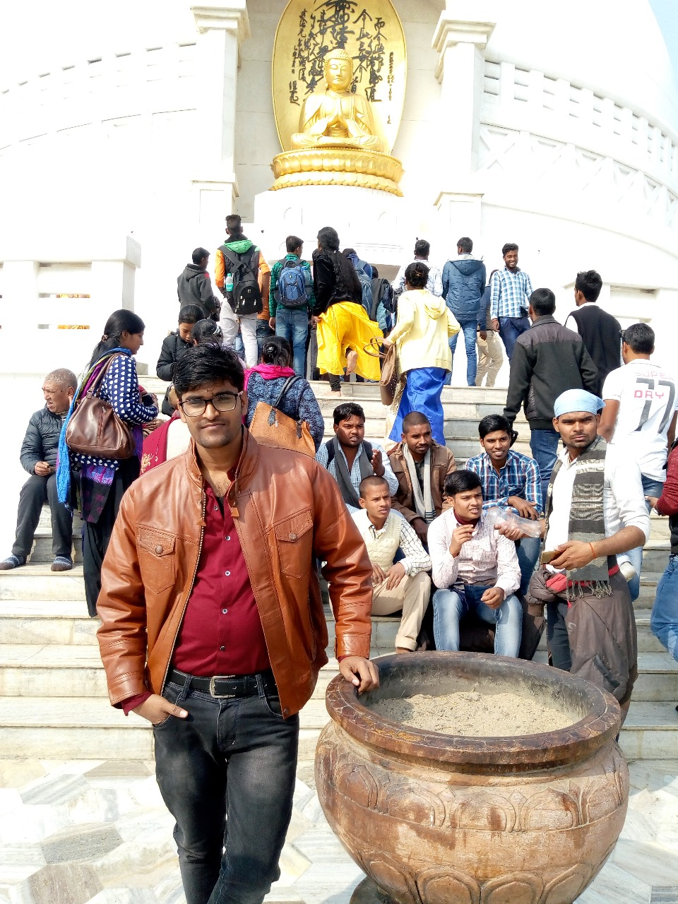

Welcome fellow wanderers! Today, I want to take you on a delightful journey back to 2019 when I embarked on an unforgettable trip with my three friends - Naveen, Rishabh, and yours truly. Our destination? The enchanting town of Rajgir in Bihar. This hidden gem not only offered us endless fun and laughter but also bestowed upon us a profound spiritual experience as we explored the sacred temple of Lord Buddha. So fasten your seatbelts and join me as we relive those cherished moments!
As the sun kissed the horizon, our adventure began in Rajgir - a place steeped in history and spirituality. With its picturesque landscapes and serene ambiance, it was the perfect backdrop for our much-awaited getaway. From the moment we set foot in this ancient town, we knew that it held countless surprises for us.

Our days were filled with laughter and camaraderie as we ventured into various exciting activities. We explored the lush green hills surrounding Rajgir through thrilling hikes that tested our endurance but rewarded us with breathtaking panoramic views at every turn. The adrenaline rush from conquering those trails together forged an unbreakable bond among us.
One of the highlights of our trip was visiting the revered temple dedicated to Lord Buddha. As we stepped into its hallowed grounds, a sense of tranquility washed over us. We immersed ourselves in prayer, seeking blessings for our futures while embracing the spiritual energy that enveloped this sacred place.

Beyond its spiritual significance, Rajgir offered a plethora of cultural experiences that left us awestruck. We delved into local cuisine, savoring delectable delicacies that tantalized our taste buds with their unique flavors and spices. The warm hospitality extended by the locals made us feel at home, and we were grateful for the opportunity to immerse ourselves in their vibrant culture.
Conclusion
Our trip to Rajgir was a perfect blend of adventure, friendship, and spiritual awakening. It reminded us of the importance of exploring new horizons, both externally and internally. As we bid farewell to this enchanting town, we carried with us cherished memories that would forever hold a special place in our hearts. So, dear readers, I encourage you to embark on your own journey of discovery and create memories that will light up your life like the radiant sunsets we witnessed in Rajgir. Happy travels!